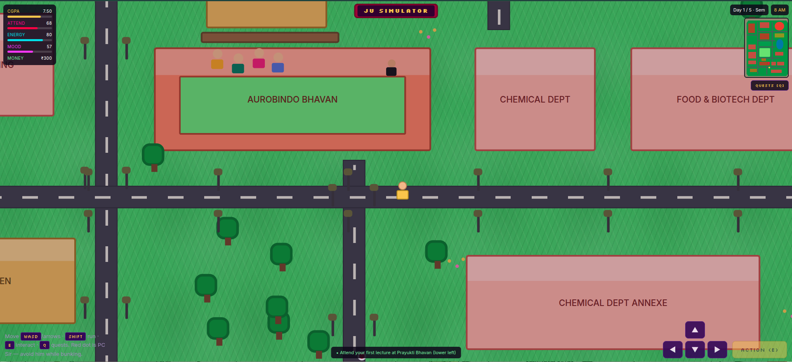
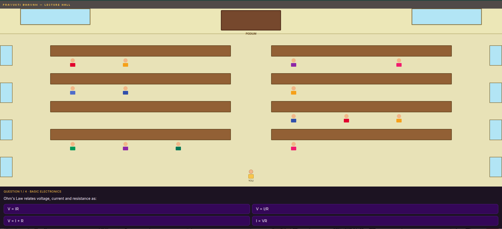
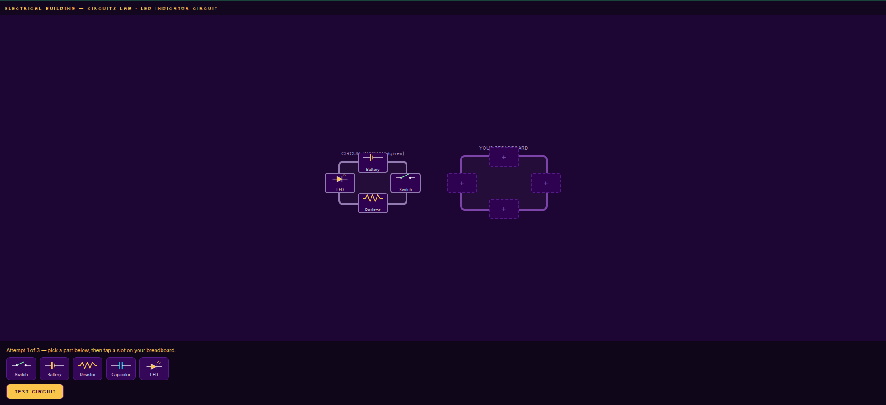
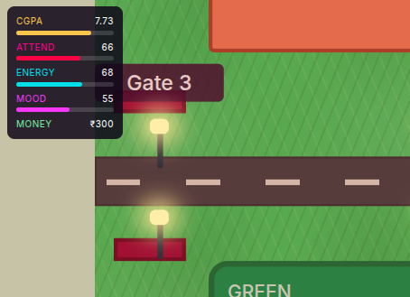

A browser-based simulator game where you play as a student navigating Jadavpur University — surviving the semesters and exploring a fan-made recreation of the campus.

JU Simulator is a fan-made 2D game where the player takes on the role of a student at Jadavpur University. The goal is to survive each semester while exploring a recreation of the campus — balancing whatever challenges the semester throws at you as you move between locations.
The whole thing runs in the browser, built with nothing but HTML, CSS, and JavaScript — no game engine or framework in the loop.
Designed and built the campus environment, character movement, and semester-survival mechanics entirely with vanilla web technologies. Structured the game logic and UI to run smoothly in the browser without any external dependencies.


